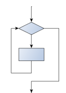
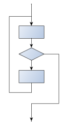

20. Indefinite Loops¶
So far we have seen two forms of iteration, for each loops and counting loops. Both of these patterns have been accomplished using python’s for loop. The for loop is a definite loop. This means that the loop will run for a predetermined number of times before stopping. There are great number of problems that can be solved with a definite loop. However, there are problems that require something more flexible.
Suppose you wanted to build a riddling program. The computer asks, “What is the air speed velocity of an unladen swallow” The computer should retrieve an answer over and over again until the user responds, “African or European?”. A definite loop will not work for this application. No matter how large of a counting loop you use, there would always be the chance that the user would need more guesses than are available.
What we need is an indefinite loop. Python provides a while loop that can be used to solve problems that have an indefinite number of iterations. Compared to a for loop, the while loop is very simplistic. This simplicity allows the programmer to use it in a variety of ways. In addition to solving indefinite problems, while loops can solve any problem that a for loop can solve. In practice, it is better to use for loops when you need a definite loop, it cuts down on errors and aids in understanding.
20.1. Structure of a while loop¶
A while loop is similar to an if statement. Like an if statement, a while loop has a condition that is checked. If the condition is true we enter the control structure. The difference is that an if statement will only run once, the while loop runs as long as (i.e. while) the condition is true.
This is simpler than python’s for loop. On the other hand, while loops are more complexity to properly implement. Within the body of the loop we must do something to cause the condition to change from True to False. Below we demonstrate how a while loop can be used to solve our original problem at beginning of our chapter. The magic happens on lines 5-6. Once the correct password has been implemented, we can set keepgoing to False, and thus end the loop.
20.2. Anything you can do...¶
Lets start by showing how while loops can do anything that a for loop can do. In other words we will demonstrate that while loops are as powerful as for loops.
20.2.1. Counting Loop¶
A counting loop needs to repeat the body of the loop a set number of times. We can accomplish this by using an accumulator. The counter is set to 0 before the loop. Each time we go through the loop we increment the counter by one. Once the counter reaches the limit, the loop will end.
Using a while loop to create a counting loop is computationally faster that doing the equivalent operation using a for loop. A for loop must use the range function. In using range, the computer must first generate a list of n items. For larger n, there will be a significant lag before the loop can start. In addition, range will require significant memory usage. The while loop implementation of the counter loop only needs space for one variable. It can start right away and has no startup costs. That said, the for loop leads to less errors as python will handle the counter for you. In general, use the for loop. Only worry about speed once your program has been written and you discover that it is too slow.
20.2.2. For each loop¶
A for loop is a perfect fit to implement a for each loop (you can probably tell just by the name). However, it is possible to do this a with a while loop. Lets review all of the things that happen in a for loop implementing a for each loop.
In translating this to a while loop, our first step is to create a while loop that will repeat the same number of times that our for loop repeated. A for loop will repeat once for each item in the sequence. In the case of a string, the number of letters in the string.
Our next step is get each variable in the sequence. The most common mistake is to try to reuse the counter variable to store each element of the sequence. Resist that urge and create another variable to store each element. Notice that it takes 4 lines of code (Lines 3-6) to replace the for loop line in our first example.
In python, there is rarely a good reason to use a while loop to implement a for each loop. The for loop is just too good. However, many other languages only (effectively) have while loops. In those languages, you would need to implement your own for each functionality. In python it is good to understand all of the work that the for loop does for you.
20.3. Sentinel Loop¶
The sentinel loop is one of the most common ways to use a while loop. A sentinel loop is typically used to inspect a stream of data: from the user or a file. The concept of a sentinel is that the there is something intrinsic about the data that indicates that the loop should stop. For instance, a program that is adding a long list of numbers might stop when it reaches a -1. Another program reading strings from the user would stop if it received an empty string.
The data that causes the loop to stop is called the sentinel. The algorithms for a sentinel loop can be summed up in 4 steps.
- Get the first piece of data
- While not sentinel:
- process data
- get next piece of data
Step one gets the first piece of data. This step is known as priming the pump. It will only be executed once and is there to get the loop started. Next we come to the while loop. We have a piece of data to test. The while loop serves to insure that only “good” data is allowed inside of the loop. It is guarding the loop. In the loop, we will first process the data. There had to be a reason that we asked for the data, right? Once we have used the previous data, we’ll grab the next piece of data. What happens next is the most elegant part. We got the next piece of data as the last action in the loop. That means we will now go to the top of the while loop and test our new data. If the data is good, we will re-enter the loop. Once we get data that is not good, i.e. it is the sentinel, the loop will stop.
Below we have an example of a sentinel loop used to add numbers together. Notice that we have one variable for the data and another variable for the accumulator.
20.4. The break statement¶
The break statement is used to immediately leave the body of its loop. The next statement to be executed is the first one after the body:
This prints:
12 16 done
The pre-test loop - standard loop behavior
for and while loops do their tests at the start, before executing any part of the body. They’re called pre-test loops, because the test happens before (pre) the body. break and return are our tools for adapting this standard behavior.
20.5. Other flavors of loops¶
Sometimes we’d like to have the middle-test loop with the exit test in the middle of the body, rather than at the beginning or at the end. Or a post-test loop that puts its exit test as the last thing in the body. Other languages have different syntax and keywords for these different flavors, but Python just uses a combination of while and if condition: break to get the job done.
A typical example is a problem where the user has to input numbers to be summed. To indicate that there are no more inputs, the user enters a special value, often the value -1, or the empty string. This needs a middle-exit loop pattern: input the next number, then test whether to exit, or else process the number:
The middle-test loop flowchart

Convince yourself that this fits the middle-exit loop flowchart: line 3 does some useful work, lines 4 and 5 can exit the loop, and if they don’t line 6 does more useful work before the next iteration starts.
The while bool-expr: uses the boolean expression to determine whether to iterate again. True is a trivial boolean expression, so while True: means always do the loop body again. This is a language idiom — a convention that most programmers will recognize immediately. Since the expression on line 2 will never terminate the loop, (it is a dummy test) the programmer must arrange to break (or return) out of the loop body elsewhere, in some other way (i.e. in lines 4 and 5 in this sample). A clever compiler or interpreter will understand that line 2 is a fake test that must always succeed, so it won’t even generate a test, and our flowchart never even put the diamond-shape dummy test box at the top of the loop!
Similarly, by just moving the if condition: break to the end of the loop body we create a pattern for a post-test loop. Post-test loops are used when you want to be sure that the loop body always executes at least once (because the first test only happens at the end of the execution of the first loop body). This is useful, for example, if we want to play an interactive game against the user — we always want to play at least one game:
Hint: think about where you want the exit test to happen
Once you’ve recognized that you need a loop to repeat something, think about its terminating condition — when will I want to stop iterating? Then figure out whether you need to do the test before starting the first (and every other) iteration, or at the end of the first (and every other) iteration, or perhaps in the middle of each iteration. Interactive programs that require input from the user or read from files often need to exit their loops in the middle or at the end of an iteration, when it becomes clear that there is no more data to process, or the user doesn’t want to play our game anymore.
20.6. Glossary¶
- algorithm
- A step-by-step process for solving a category of problems.
- body
- The statements inside a loop.
- breakpoint
- A place in your program code where program execution will pause (or break), allowing you to inspect the state of the program’s variables, or single-step through individual statements, executing them one at a time.
- bump
- Programmer slang. Synonym for increment.
- counter
- A variable used to count something, usually initialized to zero and incremented in the body of a loop.
- cursor
- An invisible marker that keeps track of where the next character will be printed.
- decrement
- Decrease by 1.
- definite iteration
- A loop where we have an upper bound on the number of times the body will be executed. Definite iteration is usually best coded as a for loop.
- development plan
- A process for developing a program. In this chapter, we demonstrated a style of development based on developing code to do simple, specific things and then encapsulating and generalizing.
- encapsulate
- To divide a large complex program into components (like functions) and isolate the components from each other (by using local variables, for example).
- escape sequence
- An escape character, \, followed by one or more printable characters used to designate a non-printable character.
- generalize
- To replace something unnecessarily specific (like a constant value) with something appropriately general (like a variable or parameter). Generalization makes code more versatile, more likely to be reused, and sometimes even easier to write.
- increment
- Both as a noun and as a verb, increment means to increase by 1.
- infinite loop
- A loop in which the terminating condition is never satisfied.
- indefinite iteration
- A loop where we just need to keep going until some condition is met. A while statement is used for this case.
- initialization (of a variable)
- To initialize a variable is to give it an initial value. Since in Python variables don’t exist until they are assigned values, they are initialized when they are created. In other programming languages this is not the case, and variables can be created without being initialized, in which case they have either default or garbage values.
- iteration
- Repeated execution of a set of programming statements.
- loop
- A statement or group of statements that execute repeatedly until a terminating condition is satisfied.
- loop variable
- A variable used as part of the terminating condition of a loop.
- meta-notation
- Extra symbols or notation that helps describe other notation. Here we introduced square brackets, ellipses, italics, and bold as meta-notation to help describe optional, repeatable, substitutable and fixed parts of the Python syntax.
- middle-test loop
- A loop that executes some of the body, then tests for the exit condition, and then may execute some more of the body. We don’t have a special Python construct for this case, but can use while and break together.
- nested loop
- A loop inside the body of another loop.
- newline
- A special character that causes the cursor to move to the beginning of the next line.
- post-test loop
- A loop that executes the body, then tests for the exit condition. We don’t have a special Python construct for this, but can use while and break together.
- pre-test loop
- A loop that tests before deciding whether the execute its body. for and while are both pre-test loops.
- reassignment
- Making more than one assignment to the same variable during the execution of a program.
- single-step
- A mode of interpreter execution where you are able to execute your program one step at a time, and inspect the consequences of that step. Useful for debugging and building your internal mental model of what is going on.
- tab
- A special character that causes the cursor to move to the next tab stop on the current line.
- trichotomy
- Given any real numbers a and b, exactly one of the following relations holds: a < b, a > b, or a == b. Thus when you can establish that two of the relations are false, you can assume the remaining one is true.
- trace
- To follow the flow of execution of a program by hand, recording the change of state of the variables and any output produced.
20.7. Exercises¶
This chapter showed us how to sum a list of items, and how to count items. The counting example also had an if statement that let us only count some selected items. In the previous chapter we also showed a function find_first_2_letter_word that allowed us an “early exit” from inside a loop by using return when some condition occurred. We now also have break to exit a loop (but not the enclosing function, and continue to abandon the current iteration of the loop without ending the loop.
Composition of list traversal, summing, counting, testing conditions and early exit is a rich collection of building blocks that can be combined in powerful ways to create many functions that are all slightly different.
The first six questions are typical functions you should be able to write using only these building blocks.
Write a function to count how many odd numbers are in a list.
Sum up all the even numbers in a list.
Sum up all the negative numbers in a list.
Count how many words in a list have length 5.
Sum all the elements in a list up to but not including the first even number. (Write your unit tests. What if there is no even number?)
Count how many words occur in a list up to and including the first occurrence of the word “sam”. (Write your unit tests for this case too. What if “sam” does not occur?)
Add a print function to Newton’s sqrt function that prints out better each time it is calculated. Call your modified function with 25 as an argument and record the results.
Trace the execution of the last version of print_mult_table and figure out how it works.
Write a function print_triangular_numbers(n) that prints out the first n triangular numbers. A call to print_triangular_numbers(5) would produce the following output:
1 1 2 3 3 6 4 10 5 15
(hint: use a web search to find out what a triangular number is.)
Write a function, is_prime, which takes a single integer argument and returns True when the argument is a prime number and False otherwise. Add tests for cases like this:
test(is_prime(11), True) test(is_prime(35), False) test(is_prime(19911129), True)
The last case could represent your birth date. Were you born on a prime day? In a class of 100 students, how many do you think would have prime birth dates?
Revisit the drunk student problem from the exercises in chapter 3. This time, the drunk student makes a turn, and then takes some steps forward, and repeats this. Our social science student now records pairs of data: the angle of each turn, and the number of steps taken after the turn. Her experimental data is [(160, 20), (-43, 10), (270, 8), (-43, 12)]. Use a turtle to draw the path taken by our drunk friend.
Many interesting shapes can be drawn by the turtle by giving a list of pairs like we did above, where the first item of the pair is the angle to turn, and the second item is the distance to move forward. Set up a list of pairs so that the turtle draws a house with a cross through the centre, as show here. This should be done without going over any of the lines / edges more than once, and without lifting your pen.

Not all shapes like the one above can be drawn without lifting your pen, or going over an edge more than once. Which of these can be drawn?

Now read Wikipedia’s article(http://en.wikipedia.org/wiki/Eulerian_path) about Eulerian paths. Learn how to tell immediately by inspection whether it is possible to find a solution or not. If the path is possible, you’ll also know where to put your pen to start drawing, and where you should end up!
What will num_digits(0) return? Modify it to return 1 for this case. Why does a call to num_digits(-24) result in an infinite loop? (hint: -1//10 evaluates to -1) Modify num_digits so that it works correctly with any integer value. Add these tests:
test(num_digits(0), 1) test(num_digits(-12345), 5)
Write a function num_even_digits(n) that counts the number of even digits in n. These tests should pass:
test(num_even_digits(123456), 3) test(num_even_digits(2468), 4) test(num_even_digits(1357), 0) test(num_even_digits(0), 1)
Write a function sum_of_squares(xs) that computes the sum of the squares of the numbers in the list xs. For example, sum_of_squares([2, 3, 4]) should return 4+9+16 which is 29:
test(sum_of_squares([2, 3, 4]), 29) test(sum_of_squares([ ]), 0) test(sum_of_squares([2, -3, 4]), 29)
You and your friend are in a team to write a two-player game, human against computer, such as Tic-Tac-Toe / Noughts and Crosses. Your friend will write the logic to play one round of the game, while you will write the logic to allow many rounds of play, keep score, decide who plays, first, etc. The two of you negotiate on how the two parts of the program will fit together, and you come up with this simple scaffolding (which your friend will improve later):
1 2 3 4 5 6 7 8 9 10 11 12 13 14 15 16 17
# your friend will complete this function def play_once(human_plays_first): """ Must play one round of the game. If the parameter is True, the human gets to play first, else the computer gets to play first. When the round ends, the return value of the function is one of -1 (human wins), 0 (game drawn), 1 (computer wins). """ # This is all dummy scaffolding code right at the moment... import random # see ch 10 for details rng = random.Random() # pick a random result between -1 and 1. result = rng.randrange(-1,2) print("Human plays first={0}, winner={1} " .format(human_plays_first, result)) return result
- Write the main program which repeatedly calls this function to play the game, and after each round it announces the outcome as “I win!”, “You win!”, or “Game drawn!”. It then asks the player “Do you want to play again?” and either plays again, or says “Goodbye”, and terminates.
- Keep score of how many wins each player has had, and how many draws there have been. After each round of play, also announce the scores.
- Add logic so that the players take turns to play first.
- Compute the percentage of wins for the human, out of all games played. Also announce this at the end of each round.
- Draw a flowchart of your logic.